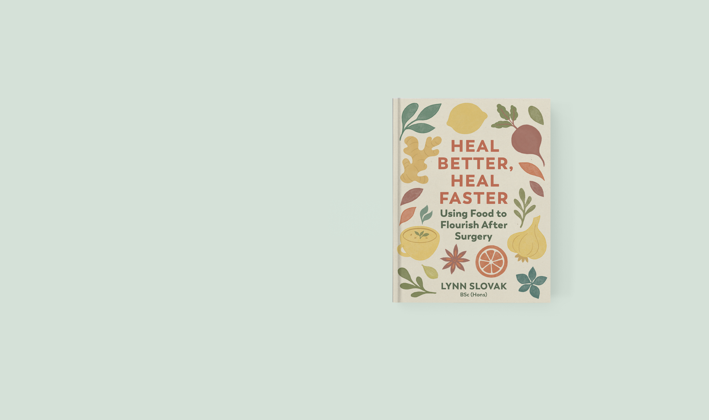
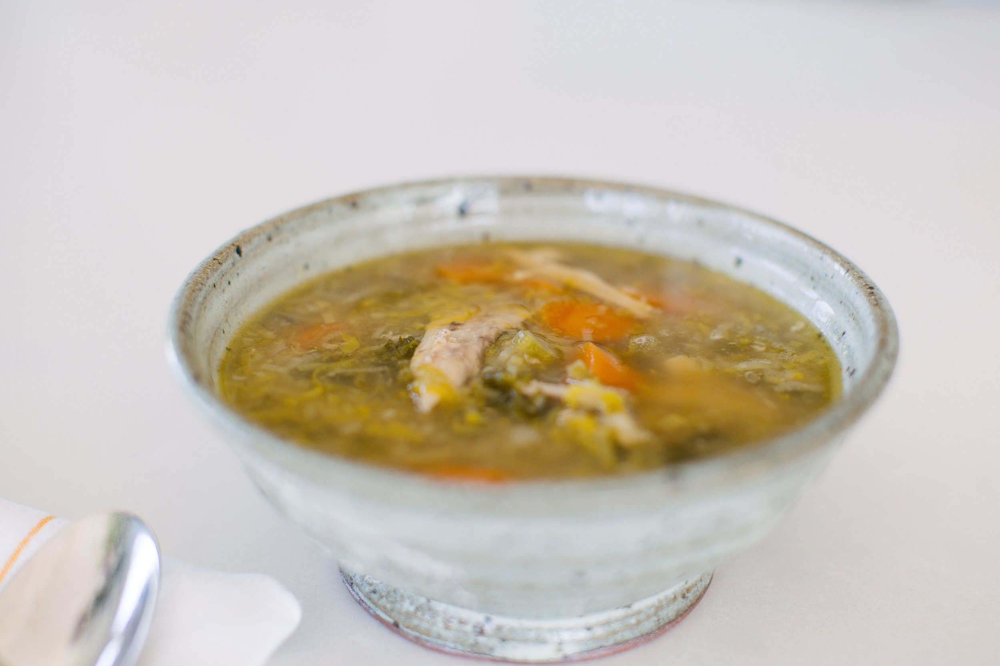

Available 3 August 2026
Heal Better, Heal Faster.
The book that tells you exactly what to eat to heal.
Recovering from surgery or a serious illness can be one of the most physically demanding experiences anyone will ever face. What most people don’t realise is that the foods they choose to eat during this time can make a profound difference to how easily, and how quickly, they recover.
In my soon-to-be-released book, Heal Better, Heal Faster, I share practical, evidence-based nutrition strategies to support your body through this process — whatever your surgery may have been.
You’ll learn which foods help support wound, bone and tissue repair, discover those that reduce the risk of infection, and gain a better understanding of the key nutrients needed to strengthen your body’s own natural healing responses. There is also a detailed discussion of the importance of the gut microbiome, alongside guidance on what to limit and even avoid completely while your body is working hard to recover.

What’s inside.
In it, you’ll learn which foods help support wound, bone and tissue repair, discover those that reduce the risk of infection, and gain a better understanding of the key nutrients needed to strengthen your body’s own natural healing responses. There is also a detailed discussion of the importance of the gut microbiome as well as guidance on what to limit and even avoid completely while your body is working hard to recover.
So if you’d like to be among the first to hear when Heal Better, Heal Faster is available to purchase, sign up to my newsletter below.
As someone who has managed complex health issues for decades through food and herbs, I thought I had a good understanding of nutrition. But as my condition deteriorated, particularly under stress, I found myself overwhelmed, unwell, and unsure where to turn. Then I found Lynn. With thoughtful dietary changes and a simple, food-as-medicine approach, she helped me begin to restore balance and regain hope. Ann · Matakana
I couldn’t recommend Lynn’s book enough. It was invaluable to me when I had my hip replacement surgery a few months ago. Lynn gave me a copy to read beforehand, and I found it both informative and easy to follow. It was incredibly helpful for both my pre- and post-operative recovery, particularly with regard to what to eat and which supplements to include to support a speedy recovery. Jen · Sandy’s Bay